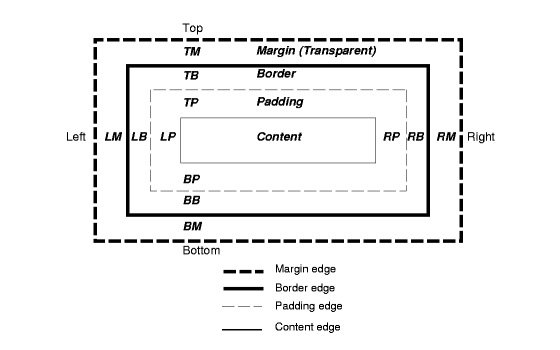

Difference between Margin, Border, and Padding
May 31, 2015
I think that everyone who is beginning to learn HTML/CSS is to face the problem of understanding the margin, border and padding.
Margin, padding and border - is part of the so-called block model. The mechanism of the block model is the following: In the middle there is a content area that surrounds the padding, border surrounded by a border, which in turn is surrounded by fields margin. Visual representation of the box model looks like this:
